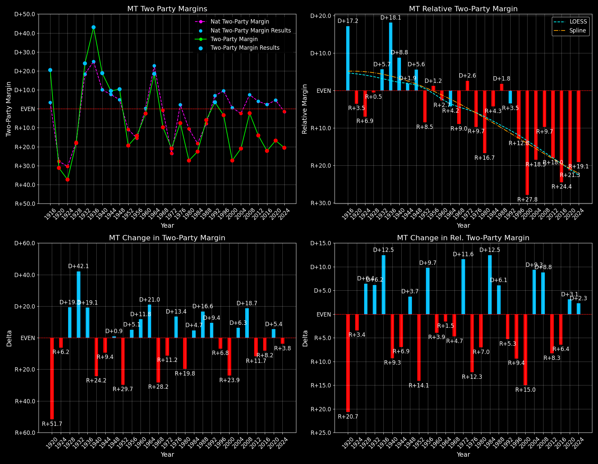

Montana (MT) — Statewide
Margins · 3rd-Party share · Pres. deltas

Relative margins · Relative 3rd-Party · Rel. deltas
Montana (MT) — Total Data
| Year | D | R | State Margin | Nat. Margin | Rel. Margin | Total votes | EVs |
|---|---|---|---|---|---|---|---|
| 1964 | 164,246(58.9%) | 113,032(40.6%) | D+18.4 | D+22.6 | R+4.2 | 278,628 | 4 |
| 1968 | 114,117(41.6%)(Δ -50,129) | 138,835(50.6%)(Δ 25,803) | R+9.0(Δ R+27.4) | R+0.7(Δ R+23.3) | R+8.3(Δ R+4.1) | 274,404 | 4 |
| 1972 | 120,197(37.8%)(Δ 6,080) | 183,976(57.9%)(Δ 45,141) | R+20.1(Δ R+11.1) | R+23.1(Δ R+22.4) | D+3.1(Δ D+11.4) | 317,603 | 4 |
| 1976 | 149,259(45.4%)(Δ 29,062) | 173,703(52.8%)(Δ -10,273) | R+7.4(Δ D+12.6) | D+2.1(Δ D+25.2) | R+9.5(Δ R+12.6) | 328,734 | 4 |
| 1980 | 118,032(32.4%)(Δ -31,227) | 206,814(56.8%)(Δ 33,111) | R+24.4(Δ R+17.0) | R+9.7(Δ R+11.8) | R+14.7(Δ R+5.2) | 363,952 | 4 |
| 1984 | 146,742(38.2%)(Δ 28,710) | 232,450(60.5%)(Δ 25,636) | R+22.3(Δ D+2.1) | R+18.2(Δ R+8.5) | R+4.1(Δ D+10.6) | 384,377 | 4 |
| 1988 | 168,936(46.2%)(Δ 22,194) | 190,412(52.1%)(Δ -42,038) | R+5.9(Δ D+16.4) | R+7.7(Δ D+10.5) | D+1.9(Δ D+5.9) | 365,674 | 4 |
| 1992 | 154,507(37.6%)(Δ -14,429) | 144,207(35.1%)(Δ -46,205) | D+2.5(Δ D+8.4) | D+5.6(Δ D+13.3) | R+3.1(Δ R+4.9) | 410,611 | 3 |
| 1996 | 167,922(41.2%)(Δ 13,415) | 179,652(44.1%)(Δ 35,445) | R+2.9(Δ R+5.4) | D+8.5(Δ D+3.0) | R+11.4(Δ R+8.4) | 407,261 | 3 |
| 2000 | 137,126(33.4%)(Δ -30,796) | 240,178(58.4%)(Δ 60,526) | R+25.1(Δ R+22.2) | D+0.5(Δ R+8.0) | R+25.6(Δ R+14.2) | 410,997 | 3 |
| 2004 | 173,710(38.6%)(Δ 36,584) | 266,063(59.1%)(Δ 25,885) | R+20.5(Δ D+4.6) | R+2.5(Δ R+3.0) | R+18.0(Δ D+7.6) | 450,445 | 3 |
| 2008 | 231,667(47.2%)(Δ 57,957) | 242,763(49.5%)(Δ -23,300) | R+2.3(Δ D+18.2) | D+7.3(Δ D+9.7) | R+9.5(Δ D+8.5) | 490,302 | 3 |
| 2012 | 201,839(41.7%)(Δ -29,828) | 267,928(55.4%)(Δ 25,165) | R+13.7(Δ R+11.4) | D+3.9(Δ R+3.4) | R+17.5(Δ R+8.0) | 484,048 | 3 |
| 2016 | 177,709(35.7%)(Δ -24,130) | 279,240(56.2%)(Δ 11,312) | R+20.4(Δ R+6.8) | D+2.1(Δ R+1.8) | R+22.5(Δ R+5.0) | 497,147 | 3 |
| 2020 | 244,786(40.5%)(Δ 67,077) | 343,602(56.9%)(Δ 64,362) | R+16.4(Δ D+4.1) | D+4.5(Δ D+2.4) | R+20.8(Δ D+1.7) | 603,674 | 3 |
| 2024 | 231,906(38.5%)(Δ -12,880) | 352,079(58.4%)(Δ 8,477) | R+19.9(Δ R+3.6) | R+1.5(Δ R+5.9) | R+18.5(Δ D+2.4) | 602,990 | 4 |
Column explanations
- Δ
- Change (delta) in the value from the previous election year.
- Year
- Election year.
- D
- Number of votes for the Democratic candidate (raw count(pct%)).
- R
- Number of votes for the Republican candidate (raw count(pct%)).
- State Margin
- Margin between the two major-party candidates, including third-party votes ((D - R)/total).
- Nat. Margin
- The national presidential margin for that year, including third-party votes ((D_total - R_total)/total_votes).
- Rel. Margin
- The presidential margin relative to the national presidential margin (Margin - Nat. Margin).
- Total votes
- Total voter turnout or ballots cast (when provided).
- EVs
- Number of electoral votes allocated to this state or unit.
Montana (MT) — Third-Party Data
| Year | D | R | Other votes | State 3rd-Party Share | 3rd-Party Nat. Share | 3rd-Party Rel. Share |
|---|---|---|---|---|---|---|
| 1964 | 164,246(58.9%) | 113,032(40.6%) | 1,350(0.5%) | 0.48% | 0.48% | 0.01% |
| 1968 | 114,117(41.6%)(Δ -50,129) | 138,835(50.6%)(Δ 25,803) | 21,452(7.8%) | 7.82% | 13.86% | -6.04% |
| 1972 | 120,197(37.8%)(Δ 6,080) | 183,976(57.9%)(Δ 45,141) | 13,430(4.2%) | 4.23% | 1.80% | 2.43% |
| 1976 | 149,259(45.4%)(Δ 29,062) | 173,703(52.8%)(Δ -10,273) | 5,772(1.8%) | 1.76% | 1.90% | -0.15% |
| 1980 | 118,032(32.4%)(Δ -31,227) | 206,814(56.8%)(Δ 33,111) | 39,106(10.7%) | 10.74% | 8.24% | 2.51% |
| 1984 | 146,742(38.2%)(Δ 28,710) | 232,450(60.5%)(Δ 25,636) | 5,185(1.3%) | 1.35% | 0.67% | 0.68% |
| 1988 | 168,936(46.2%)(Δ 22,194) | 190,412(52.1%)(Δ -42,038) | 6,326(1.7%) | 1.73% | 0.98% | 0.75% |
| 1992 | 154,507(37.6%)(Δ -14,429) | 144,207(35.1%)(Δ -46,205) | 111,897(27.3%) | 27.25% | 19.55% | 7.70% |
| 1996 | 167,922(41.2%)(Δ 13,415) | 179,652(44.1%)(Δ 35,445) | 59,687(14.7%) | 14.66% | 10.05% | 4.61% |
| 2000 | 137,126(33.4%)(Δ -30,796) | 240,178(58.4%)(Δ 60,526) | 33,693(8.2%) | 8.20% | 3.75% | 4.45% |
| 2004 | 173,710(38.6%)(Δ 36,584) | 266,063(59.1%)(Δ 25,885) | 10,672(2.4%) | 2.37% | 1.00% | 1.37% |
| 2008 | 231,667(47.2%)(Δ 57,957) | 242,763(49.5%)(Δ -23,300) | 15,872(3.2%) | 3.24% | 1.42% | 1.82% |
| 2012 | 201,839(41.7%)(Δ -29,828) | 267,928(55.4%)(Δ 25,165) | 14,281(3.0%) | 2.95% | 1.73% | 1.22% |
| 2016 | 177,709(35.7%)(Δ -24,130) | 279,240(56.2%)(Δ 11,312) | 40,198(8.1%) | 8.09% | 5.73% | 2.36% |
| 2020 | 244,786(40.5%)(Δ 67,077) | 343,602(56.9%)(Δ 64,362) | 15,286(2.5%) | 2.53% | 1.84% | 0.69% |
| 2024 | 231,906(38.5%)(Δ -12,880) | 352,079(58.4%)(Δ 8,477) | 19,005(3.2%) | 3.15% | 1.88% | 1.27% |
Column explanations
- Year
- Election year.
- D
- Number of votes for the Democratic candidate (raw count(pct%)).
- R
- Number of votes for the Republican candidate (raw count(pct%)).
- Other votes
- Number of votes for third-party (other) candidates (raw count(pct%)).
- State 3rd-Party Share
- Share of the vote received by third-party (other) candidates.
- 3rd-Party Nat. Share
- The national third-party share for that year (3rd-Party votes / total votes).
- 3rd-Party Rel. Share
- Third-party share relative to the national third-party share (3rd-Party share - Nat. 3rd-Party share).

Two-party margins · relative · deltas
Montana (MT) — Two-Party Data
| Year | D | R | 2-Party Margin | 2-Party Nat. Margin | 2-Party Rel. Margin | EVs |
|---|---|---|---|---|---|---|
| 1964 | 164,246(59.2%) | 113,032(40.8%) | D+18.5 | D+22.7 | R+4.2 | 4 |
| 1968 | 114,117(45.1%)(Δ -50,129) | 138,835(54.9%)(Δ 25,803) | R+9.8(Δ R+28.2) | R+0.8(Δ R+23.5) | R+9.0(Δ R+4.7) | 4 |
| 1972 | 120,197(39.5%)(Δ 6,080) | 183,976(60.5%)(Δ 45,141) | R+21.0(Δ R+11.2) | R+23.6(Δ R+22.8) | D+2.6(Δ D+11.6) | 4 |
| 1976 | 149,259(46.2%)(Δ 29,062) | 173,703(53.8%)(Δ -10,273) | R+7.6(Δ D+13.4) | D+2.1(Δ D+25.7) | R+9.7(Δ R+12.3) | 4 |
| 1980 | 118,032(36.3%)(Δ -31,227) | 206,814(63.7%)(Δ 33,111) | R+27.3(Δ R+19.8) | R+10.6(Δ R+12.7) | R+16.7(Δ R+7.0) | 4 |
| 1984 | 146,742(38.7%)(Δ 28,710) | 232,450(61.3%)(Δ 25,636) | R+22.6(Δ D+4.7) | R+18.3(Δ R+7.7) | R+4.3(Δ D+12.5) | 4 |
| 1988 | 168,936(47.0%)(Δ 22,194) | 190,412(53.0%)(Δ -42,038) | R+6.0(Δ D+16.6) | R+7.8(Δ D+10.5) | D+1.8(Δ D+6.1) | 4 |
| 1992 | 154,507(51.7%)(Δ -14,429) | 144,207(48.3%)(Δ -46,205) | D+3.4(Δ D+9.4) | D+6.9(Δ D+14.7) | R+3.5(Δ R+5.3) | 3 |
| 1996 | 167,922(48.3%)(Δ 13,415) | 179,652(51.7%)(Δ 35,445) | R+3.4(Δ R+6.8) | D+9.5(Δ D+2.6) | R+12.8(Δ R+9.4) | 3 |
| 2000 | 137,126(36.3%)(Δ -30,796) | 240,178(63.7%)(Δ 60,526) | R+27.3(Δ R+23.9) | D+0.5(Δ R+8.9) | R+27.8(Δ R+15.0) | 3 |
| 2004 | 173,710(39.5%)(Δ 36,584) | 266,063(60.5%)(Δ 25,885) | R+21.0(Δ D+6.3) | R+2.5(Δ R+3.0) | R+18.5(Δ D+9.3) | 3 |
| 2008 | 231,667(48.8%)(Δ 57,957) | 242,763(51.2%)(Δ -23,300) | R+2.3(Δ D+18.7) | D+7.4(Δ D+9.9) | R+9.7(Δ D+8.8) | 3 |
| 2012 | 201,839(43.0%)(Δ -29,828) | 267,928(57.0%)(Δ 25,165) | R+14.1(Δ R+11.7) | D+3.9(Δ R+3.4) | R+18.0(Δ R+8.3) | 3 |
| 2016 | 177,709(38.9%)(Δ -24,130) | 279,240(61.1%)(Δ 11,312) | R+22.2(Δ R+8.2) | D+2.2(Δ R+1.7) | R+24.4(Δ R+6.4) | 3 |
| 2020 | 244,786(41.6%)(Δ 67,077) | 343,602(58.4%)(Δ 64,362) | R+16.8(Δ D+5.4) | D+4.5(Δ D+2.3) | R+21.3(Δ D+3.1) | 3 |
| 2024 | 231,906(39.7%)(Δ -12,880) | 352,079(60.3%)(Δ 8,477) | R+20.6(Δ R+3.8) | R+1.5(Δ R+6.0) | R+19.1(Δ D+2.3) | 4 |
Column explanations
- Δ
- Change (delta) in the value from the previous election year.
- Year
- Election year.
- D
- Number of votes for the Democratic candidate (raw count(pct%)).
- R
- Number of votes for the Republican candidate (raw count(pct%)).
- 2-Party Margin
- Margin between the two major-party candidates, ignoring third-party votes ((D - R)/(D + R)).
- 2-Party Nat. Margin
- The national presidential margin for that year, including third-party votes ((D_total - R_total)/total_votes).
- 2-Party Rel. Margin
- The presidential margin relative to the national presidential margin (Margin - Nat. Margin).
- EVs
- Number of electoral votes allocated to this state or unit.